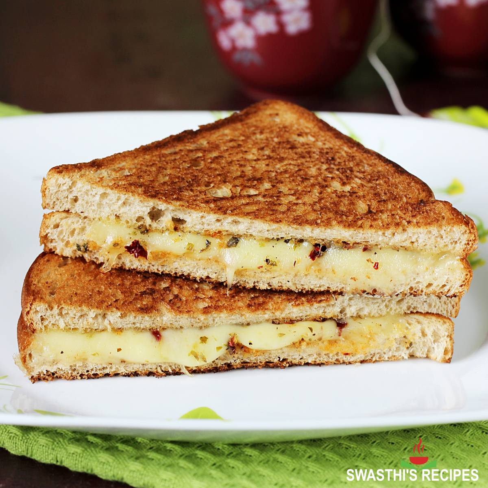

Cheese Sandwich

Description
Grilled cheese sandwich is one of our favorite quick and simple vegetarian
recipes that only requires a few key ingredients. Its made with a good
loaf of bread (fresh or day old) a tangy block of cheddar or mozzarella
cheese, a bit of softened butter, and flavorful spices and herbs.
Ingredients
- 8 to 10 slices bread (preferred choice of soft bread)
- 3 to 4 tablespoons salted butter softened or as needed
- 1 cup grated cheddar cheese or as required
- 1 teaspoon crushed black pepper or as required
- 1 teaspoon roasted cumin powder or as required
- 1 to 2 teaspoons chaat masala or sandwich masala, add as required
Steps
-
First grate the cheese and set aside. Then spread the softened butter on
each of the bread slice.
-
Top half of the bread slices with 3 to 4 tablespoons of grated cheese or
more as needed, depending on the size of the bread.
-
Sprinkle two to three pinches of black pepper powder, cumin powder and
chaat masala on each slice which is topped with grated cheese.
-
Cover the cheese topped bread slices with the remaining buttered bread
slices.
- Spread butter on top of each slice.
-
On a heated panini press place the sandwich carefully with the buttered
side touching the bottom grill.
-
Spread butter on the top bread slices. Close the panini press or the
sandwich maker and grill for 2 to 3 minutes until the sandwiches are
crisp and golden.
-
Serve grilled cheese sandwich hot as is or accompanied with Coriander
Chutney or tomato ketchup or mayo.